Caso 015 · Ami Shinar - Amir Mann · 2014 · transporte (estación de tren)
Diseño de forma independiente a partir del encargo y del boceto.
Consigna B. Leo el boceto (silueta alargada, cubierta que sube de izquierda a derecha, trazos oblicuos, rayado a la derecha, terreno casi horizontal) como un diagrama de relaciones, no como un volumen. Lo que retengo es: una pendiente única que crece en una dirección, un gradiente de densidad (más trazo a la derecha) y un suelo plano. Lo traduzco así: el eje del proyecto es el recorrido plaza (este) – edificio – pasarela cubierta sobre el cauce – andén (oeste), perpendicular a la vía; una única cubierta de chapa sube un 9 % de oeste a este, de +3,50 a +8,54 m; y el aire fresco entra por el lado del cauce y sale por las aberturas altas del lado de la plaza.
| Partido 1: barra paralela a la vía (lectura literal) | Partido 2: eje transversal andén-pasarela-plaza (elegido) | |
|---|---|---|
| Implantación | Barra de 12 x 52 m entre el andén y el cauce, con una pasarela de acceso única | Edificio de 16 x 17 m junto a la plaza; pasarela de 34 m sobre el cauce; andén de 6 x 60 m |
| Programa | Todo en una barra; vestíbulo lejos de la glorieta | Vestíbulo en el punto de contacto con el viario y la parada |
| Clima | Una barra cerrada a la vía y al cauce; poca ventilación cruzada | Pasarela con ventanas N y S que lleva el aire del cauce al vestíbulo; salida alta al este |
| Accesos y vistas | El viajero rodea el edificio hasta el andén | El recorrido se lee en una línea: plaza, hall, pasarela, tren |
| Normativa y coste | Ocupa la franja entre vía y cauce; más cimentación continua | Una pieza masiva pequeña y una pasarela ligera montada en seco; solo 3 apoyos en el cauce |
Comprobación de la consigna. La lectura literal da una barra paralela a la vía con la cubierta inclinada. Mi planta es un eje en T perpendicular a la vía, con tres piezas de naturaleza distinta (andén abierto, pasarela ligera, caja masiva) y la sección organizada como un túnel de viento inclinado. Implantación, volumetría y sección difieren del partido 1, así que la consigna ha actuado. La razón de fondo es el encargo: la vía y el cauce corren de norte a sur y todo el acceso llega por el este, de modo que el cauce de 16 m es el obstáculo principal y se convierte en el tema del proyecto.
El encargo no fija superficies. Programa deducido de las actividades de una estación pequeña (pocas decenas de viajeros por tren, en pocos trenes al día): comprar o recoger billete (unas pocas personas a la vez), esperar a cubierto, ir al aseo, llegar en coche o en autobús, subir al tren, y mantener el edificio. Comparé una versión polivalente mínima (hall único con aseo, unos 120 m² en total) con la habitual (hall, taquilla, sala de espera, cafetería, consigna, más de 400 m²). Elijo una intermedia: sin cafetería ni consigna (ninguna actividad del encargo las pide), pero con una espera climatizada separada del hall, porque el encargo nombra la comodidad climática de la espera como objetivo.
| Estancia | Superficie | Actividad |
|---|---|---|
| Vestíbulo, venta y espera | 128 m² | llegar, comprar en máquina, esperar, atravesar hacia la pasarela |
| Espera climatizada | 29,6 m² | espera con calor o frío de personas con movilidad reducida y familias; cierre de dos hojas de 0,80 m |
| Aseo accesible | 13,6 m² | círculo de 1,50 m y transferencia lateral de 0,80 m |
| Aseos 2 y 3 | 10,4 m² cada uno | unisex individuales |
| Oficina y venta | 25 m² | venta presencial con ventanilla de 1,60 m al hall |
| Vestuario del personal | 20 m² | inodoro, lavabo, taquillas (2,40 m) y banco; 2-3 personas |
| Limpieza y basuras | 13,5 m² | fregadero y contenedor; se sale solo al patio |
| Instalaciones | 20 m² | grupo, cuadro y telecomunicaciones; puerta doble de 1,60 m al patio |
| Pasarela cubierta | 129 m² (3,8 x 34) | recorrido y espera abrigada del cruce del cauce |
| Andén | 6 x 60 m (40 m cubiertos) | subir al tren; 7 bancos |
| Plaza, parada, patio, calzada de servicio, aparcamiento | ver U02 | llegada, bus, carga y descarga, 20 plazas |
El hall de 128 m² es amplio a propósito: es el único lugar donde se cruzan las dos circulaciones (plaza-pasarela y hall-aseos) y hace de espera principal de un tren con unos 60-100 viajeros. Para que no se vea vacío agrupé en él los bancos y las máquinas contra los lados y dejé el centro libre para el flujo.
Programa técnico. Cuarto de instalaciones, limpieza y basuras, vestuario del personal, patio de servicio con zona de contenedores y calzada de servicio de 5 m para carga y descarga (acceso desde la calle de acceso por el este), aparcamiento con acceso rodado propio: entrada de 6 m desde la calle, calle de maniobra de 6,0 m entre dos hileras de 10 plazas a 90°, con 2 plazas para personas con movilidad reducida (17 y 18) junto al paso peatonal accesible de 3,5 m que lleva a la plaza y al vestíbulo.
Envolvente. Comparé (a) una envolvente masiva y casi ciega (bloque de 35 cm con aislante, huecos del 5 %) y (b) una envolvente ligera y permeable (madera con ventanas del 25 %). El clima es BSh/Csa: verano de 30-33 °C, oscilación diaria alta, lluvia inferior a 500 mm, soleamiento intenso. Resultado por zonas:
| Fachada | Hueco | Ventilación | Protección solar |
|---|---|---|---|
| Edificio, sur y norte | 5-6 % (ventanas altas de 0,60 m sobre 1,60 m de antepecho; ventana de la oficina de 1,60 m) | ventanas altas para sacar el calor | pocas aberturas y vidrio de control solar |
| Edificio, este (plaza) | 18 % (dos puertas de 2,0 m, ventana alta de 2,0 x 5,6 m) | salida alta del aire que entra por la pasarela | porche de 6 m con 4 pilares redondos y la cubierta, que vuela 6 m |
| Pasarela, norte y sur | 26 % cada lado (10 ventanas de 2,0 m, antepecho 0,90, dintel 2,90) | cruzada oeste-este, entrada del aire fresco sobre el cauce | vidrio de control solar (factor 0,35) y la cubierta 3,9 m más alta que el suelo |
Elijo (a) en el edificio, porque necesita inercia térmica con oscilación alta y está al lado de la vía y la calle (ruido), y (b) en la pasarela, que es un espacio de paso y espera breve donde la luz y la vista del cauce valen más que la inercia. La parte norte de la pasarela no recibe sol directo; la parte sur sí, de ahí el vidrio de control solar. Limitación: no he modelado lamas ni toldos adicionales; el sombreamiento de las ventanas sur de la pasarela depende del vuelo de 0,4 m de la cubierta y del vidrio.
Sistema constructivo. Comparé (a) masivo hecho en obra (muros de bloque, forjado de hormigón) y (b) ligero montado en seco (acero y madera). No consta presupuesto; supongo una obra pública pequeña de 1.400-1.800 €/m². El acceso a la obra es solo desde el este y el cauce corta el solar: una pasarela de hormigón colado in situ exigiría cimbra de 16 m dentro del cauce, con riesgo de crecida. Por eso:
Contacto con el suelo. El terreno es llano, pero el cauce impone la decisión. Comparé apoyarse a nivel con terraplén y vado frente a elevarse y salvar el cauce. Elijo apoyar el edificio y el andén a nivel (cota 0,00, solera sobre encachado), para el itinerario accesible sin rampas, y dejar el cauce libre con la pasarela a la misma cota, de modo que el agua de crecida pasa por debajo (lecho a -2,00). El andén queda 0,55 m por encima del balasto (que baja a -0,55) para el embarque.
| Exigido | Propuesto | Cumple / desviación |
|---|---|---|
| Plantas | P01 planta baja 1:100, P02 planta general 1:200, P03 cubierta | Cumple |
| Secciones | S01 longitudinal, S02 transversal | Cumple |
| Alzados | S03 este y oeste, S04 sur y norte | Cumple |
| Detalles constructivos | D01 sección de fachada 1:20, de la cimentación a la cubierta | Cumple |
| Espacios exteriores | U01 situación, U02 urbanización (curvas, colectores, jardín de lluvia, aparcamiento) | Cumple |
| Vistas | V01 desde la plaza a 1,60 m, V02 axonometría | Cumple |
| Andenes y espera | andén 6 x 60 m, 40 m con marquesina; espera climatizada de 29,6 m² | Cumple |
| Vestíbulo y venta de billetes | 128 m² + oficina de 25 m² con ventanilla | Cumple |
| Circulaciones y accesibilidad | todo a cota 0,00; pasillos y puertas de 0,80 m o más; aseo accesible; paso peatonal accesible desde las plazas PMR | Cumple (sin escaleras ni rampas) |
| Aseos | 1 accesible + 2 individuales | Cumple |
| Locales técnicos y de personal | instalaciones, limpieza, vestuario | Cumple |
| Aparcamiento y parada | 20 plazas (2 PMR) con calle de 6,0 m; parada con marquesina de 2,8 x 8 m y bahía de 16 m | Cumple |
| Normativa genérica (sin alturas ni retranqueos) | cumple lo mínimo de uso (puertas 0,72-0,80, pasillos 1,00-1,20, aseo accesible con 1,50 m) | Cumple |
| Superficie total (a definir) | cerrada ~400 m² (272 edificio + 129 pasarela), cubierta ~590 m², andén 360 m² | Sin cifra exigida |
| Evacuación | tres salidas: dos puertas de 2,0 m a la plaza y la pasarela de 2,4 m al andén; ocupación del hall < 100 personas | Cumple |
Desviaciones y avisos de composición. La comprobación lógica da 0 errores y 0 avisos. Los avisos de ocupación de hoja (P02, P03, S01-S04, U02) provienen de que la parcela es muy larga (más de 100 m en la dirección de la vía y del cauce) y de que las plantas y alzados completos a 1:100/1:200 exigen formatos A1; agrupé los alzados de dos en dos y no se puede reducir más sin perder la escala común. No hay edificación existente: todo es nuevo.
| Elemento | Material | Espesor | Motivo |
|---|---|---|---|
| Cubierta del edificio y pasarela | chapa ondulada sobre aislante PIR 12 cm y correa metálica | 30 cm total, pendiente 9 %, solapes de 20 cm | ligereza, evacúa el agua al oeste; la chapa refleja el sol |
| Marquesina de andén | chapa | 15 cm, pendiente 3 % hacia el este | evacuar lejos de la vía |
| Fachada del edificio | enfoscado de mortero (acabado enlucido), SATE 10 cm, bloque 20 cm, enlucido de yeso 3 cm | 35 cm | inercia térmica en clima de oscilación alta |
| Fachada de pasarela | madera (CLT) con acabado de madera | 20 cm | ligereza, montaje en seco |
| Tabiques | ladrillo enlucido | 12 cm | separación sin carga |
| Suelos | baldosa (hall, aseos, vestuario), tarima (espera climatizada, oficina), losa (instalaciones, limpieza), exterior (plaza, patio) | 3 cm sobre solera de 15 cm | uso y limpieza |
| Carpinterías | vidrio de control solar en ventanas; puertas dobles de 2,0 m en el este y 2,4 m en la pasarela | luz y evacuación |
Clima. La cubierta única de 9 % funciona como diagrama de ventilación: aire fresco del cauce por la pasarela a 3,5 m, salida de aire caliente por la ventana alta este a 8 m. La inercia del bloque modera la oscilación diaria; la cubierta vuela 6 m sobre la plaza como porche contra el sol (soleamiento intenso). La lluvia escasa se recoge para el jardín.
Accesibilidad. Todo el recorrido a cota 0,00, sin escalones: plazas PMR 17-18, paso peatonal de 3,5 m, puerta de 2,0 m, hall, pasarela de 3,8 m de ancho, puerta de 2,4 m y andén de 6 m con franja de seguridad de 1,0 m y banda táctil. El único desnivel es el del tren (0,55 m), resuelto por el vehículo.
Evacuación. Tres salidas del vestíbulo (dos de 2,0 m a la plaza y una de 3,0 m a la pasarela); recorrido máximo de 15 m. Ocupación del hall < 100 personas.
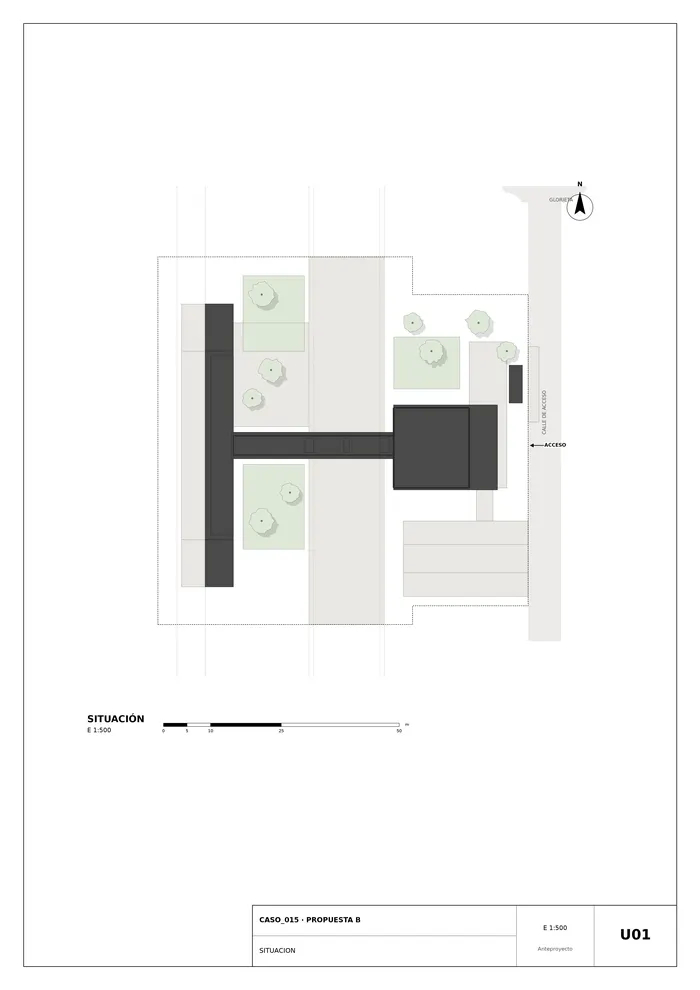
U01 · Situación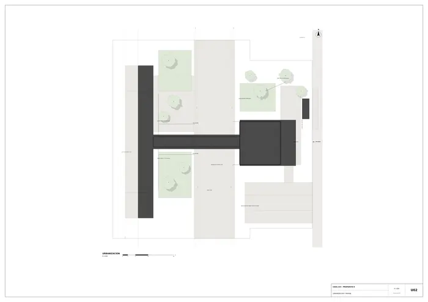
U02 · Urbanización y paisaje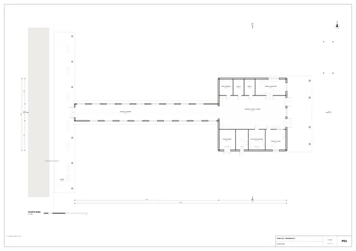
P01 · Planta baja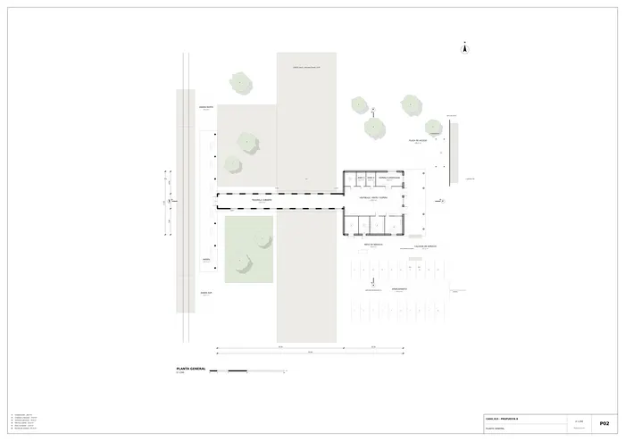
P02 · Planta general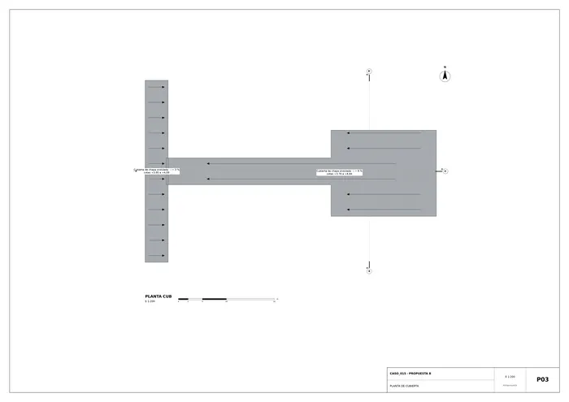
P03 · Planta de cubierta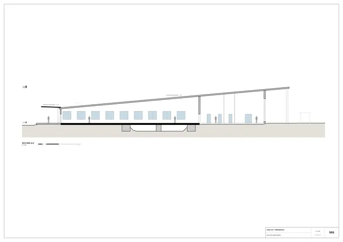
S01 · Sección longitudinal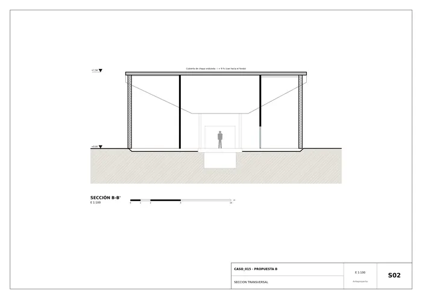
S02 · Sección transversal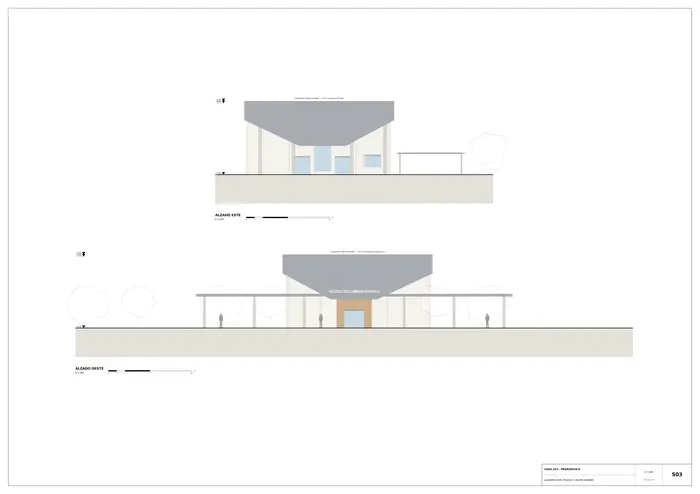
S03 · Alzados este (plaza) y oeste (andén)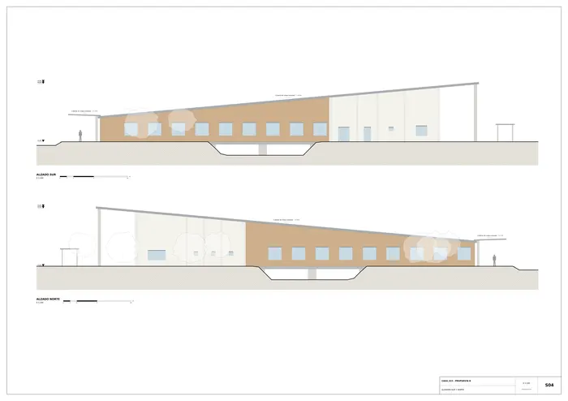
S04 · Alzados sur y norte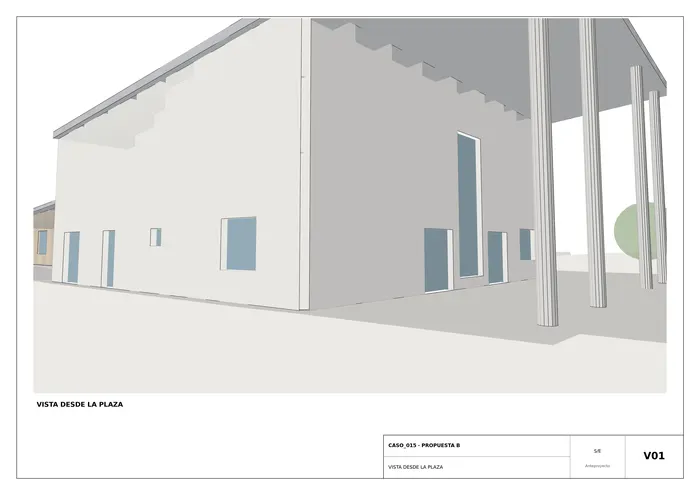
V01 · Vista desde la plaza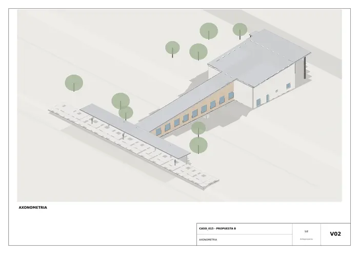
V02 · Axonometría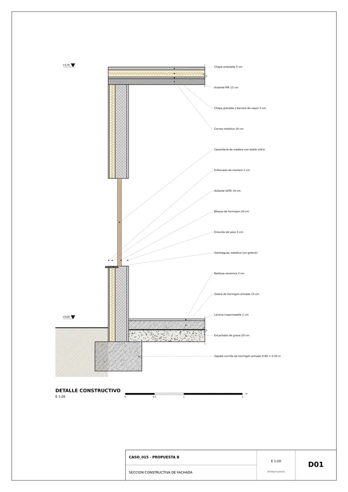
D01 · Sección constructiva de fachadaMemoria de la propuesta tal como la entregó el sistema. Se han omitido las notas internas del proceso (revisiones, control de reconocimiento y referencias a archivos de trabajo).